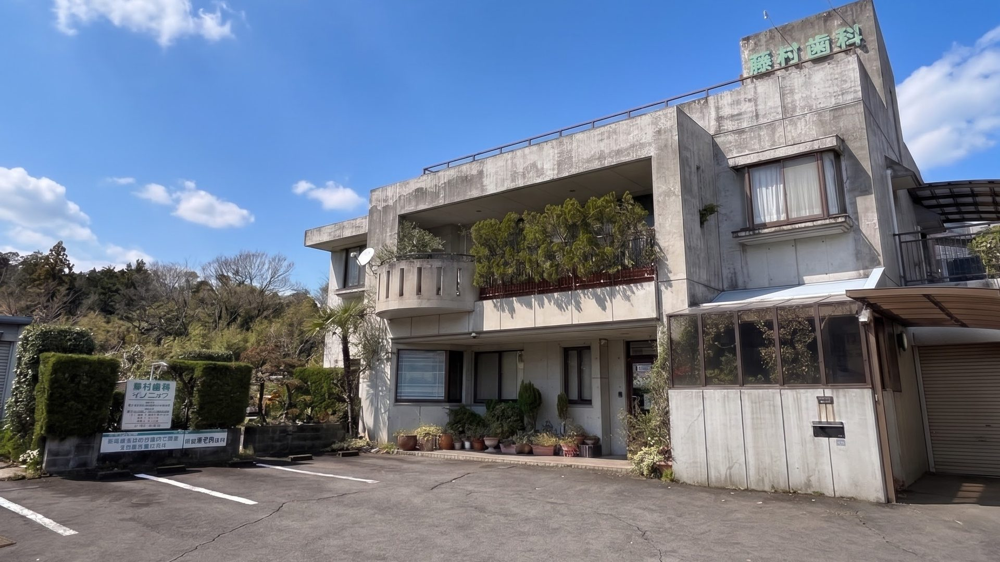
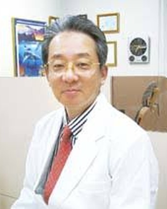
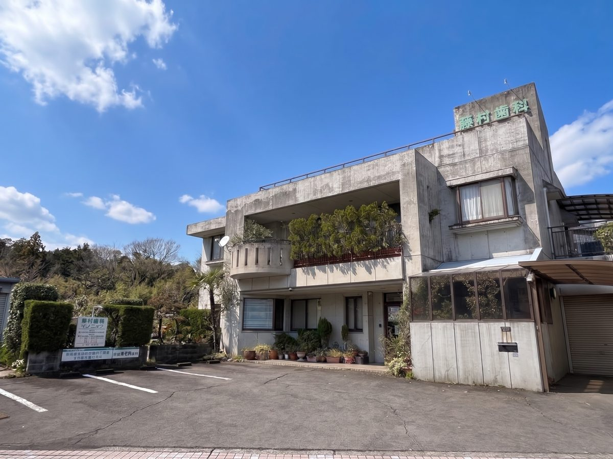

Your smile, our care.
全身の健康は、
お口の中から
はじまります
鹿児島市皇徳寺台で開業して約40年。
噛みあわせと全身の健康を大切に考え、
できるだけ歯を削らない、痛みに配慮した治療を心がけています。
News
お知らせ
- 診療時間
診療時間のご案内
平日は9:00〜12:30／14:30〜18:00（最終受付17:30）、水曜・土曜は午前のみの診療です。日曜・祝日は休診です。
- ホワイトニング
ホワイトニングを行っています
歯の黄ばみや着色が気になる方はご相談ください。費用や注意点は診療案内でご確認いただけます。
- 入れ歯
ミラクルデンチャーのご相談を受け付けています
今の入れ歯が合わない、目立つのが気になるといったお悩みをお聞かせください。
- 保険証
マイナ保険証がご利用いただけます
オンライン資格確認に対応しています。受付のカードリーダーをご利用ください。
待ち時間を少なくするため、
予約優先で診療しております
急な痛み・腫れの方は、まずお電話でご相談ください。
Policy
診療理念
自分が受けたい治療を、
患者様にも。
お口のお悩みも、治療に望むことも、お一人おひとり違います。
だからこそ当院は、まずじっくりお話を伺い、その方に合った治療を一緒に考えます。
できるだけ歯を削らず、残せるものは残す。
噛みあわせを整えることで、全身の健康にもつなげていきたいと考えています。
Greeting
ご挨拶

「全身の健康はお口から」
約40年、その想いで診療を続けています。
鹿児島市の皇徳寺台で開業して約40年になります。これまでの診療を通して、噛みあわせが全身の健康に影響することを強く感じてきました。なるべく歯を削らない、痛みに配慮した治療を心がけています。
私自身、幼い頃から虫歯に悩み、虫歯治療・部分入れ歯・インプラントと、さまざまな歯科治療を受けてきました。その経験があるからこそ、患者様の不安やお気持ちに寄り添った診療をしたいと考えています。
院長藤村 卓生
院長略歴
- 昭和大学歯学部歯学科 卒業
- 鹿児島大学歯学部 第一口腔外科 勤務
- 藤村歯科クリニック 開業（鹿児島市皇徳寺台）
Features
当院の特徴

POINT 01
できるだけ削らない、
歯と神経を残す虫歯治療
一度削った歯は元に戻りません。当院では虫歯の状態をよく確認し、削る量をできるだけ少なくして、歯の神経を残すことを大切にしています。治療の方法は、お口の状態をご説明したうえで一緒に決めていきます。
詳しくはこちら
POINT 02
金属のバネが目立たない入れ歯
「ミラクルデンチャー」
当院はミラクルデンチャーFJ会員医院です。金属のバネを使わず樹脂でつくる部分入れ歯で、口元が自然に見えるよう配慮されています。今の入れ歯が合わない、すぐ外してしまうといったお悩みもお聞かせください。
詳しくはこちら
POINT 03
口腔外科での経験を活かした
インプラント治療
院長は鹿児島大学歯学部第一口腔外科での勤務経験があり、日本先進インプラント医療学会（AIM）に所属しています。CTなどで骨の状態を確認したうえで、治療の流れやリスクも含めてご説明します。
詳しくはこちら
POINT 04
患者様と十分に話し合って
治療を決めます
院長自身も子どもの頃から虫歯に悩み、部分入れ歯やインプラントの治療を受けてきました。治療を受ける側の不安がわかるからこそ、お一人おひとりとよく話し合い、納得いただいてから治療を進めます。
詳しくはこちらClinic
院内紹介

外観
皇徳寺台で約40年、地域の皆様に通っていただいています。

受付
ご予約やお困りごとは受付スタッフにお気軽にお声がけください。

待合室
落ち着いてお待ちいただける空間づくりを心がけています。

診療室
治療内容をご説明しながら診療を進めます。

設備
検査・診断に必要な機器をそろえています。

衛生管理
使用する器具は洗浄・滅菌を行い、清潔に管理しています。
Information
医院情報
- 医院名
- 藤村歯科クリニック
- 院長
- 藤村 卓生
- 所在地
- 〒891-0103
鹿児島県鹿児島市皇徳寺台4丁目31-6 - 電話番号
- 099-265-6480（FAX 099-265-6679）
- 駐車場
- あり（5台）
- 診療科目
- 歯科・歯科口腔外科
- 診療内容
- 虫歯治療／歯周病治療／入れ歯（義歯）／インプラント／予防歯科・クリーニング／口腔外科
各種保険取り扱い
保険診療を中心に行っています。自費診療は選択肢の一つとしてご説明し、ご希望の方にのみ行います。
予約優先診療
待ち時間を少なくするため、予約優先で診療しています。お電話でご予約ください。
急患の方へ
急な痛みや腫れにもできる限り対応します。混み合う場合もありますので、来院前にお電話ください。
| 診療時間 | 月 | 火 | 水 | 木 | 金 | 土 | 日・祝 |
|---|---|---|---|---|---|---|---|
| 9:00〜12:30 | ● | ● | ● | ● | ● | ★ | ／ |
| 14:30〜18:00 | ● | ● | ／ | ● | ● | ／ | ／ |
★ 土曜日は9:00〜13:00（昼休みなし）
最終受付：平日17:30／土曜12:00
休診日：水曜午後・土曜午後・日曜・祝日